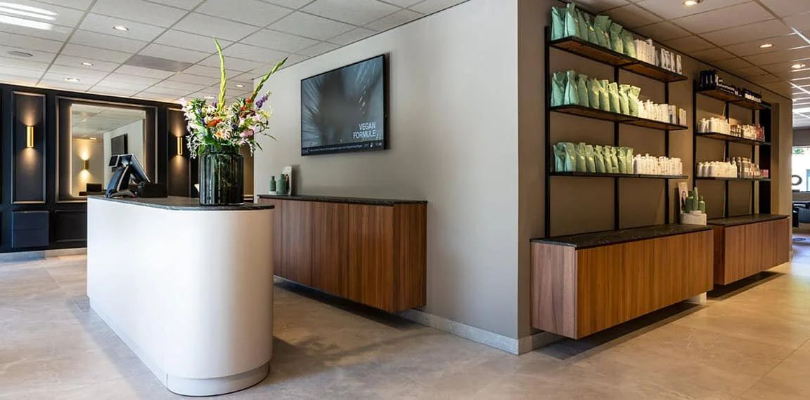

Onze behandelingen
Of u nu enkel uw haren wilt laten knippen of op zoek bent naar een professional die gespecialiseerd is in het verzorgen van uw complete bruidskapsel, bij BY ESSYL bent u aan het juiste adres.
Uitgebreide knipbehandeling met vooraf overleg over wensen, mogelijkheden en bijbehorend advies.
Uitgebreide standaard kleurbehandeling met vooraf overleg en advies. Basis kleurbehandeling met 1 kleur.
Uw haar wordt in het door u gewenste model geföhnd en gestyled.
Meerdere kleuren in het haar voor mooie en dynamische kleurovergangen.
Het haar wordt gekruld door middel van rollers voor een professioneel en natuurlijk uitziend resultaat.
Uw haar wordt opgestoken voor een elegant, chic en trendy uiterlijk.
Complete professionele verzorging van het haar rondom uw bruiloft. Eenmaal proefkapsel is hierbij inbegrepen.
Haarverlenging met 100% natuurlijk mensenhaar voor een vollere en mooiere bos haar.
Visagie basis voor een avond uit of een andere speciale gelegenheid, of een uitgebreide visagiebehandeling. Bruidsmake-up met eenmaal proefmake-up inbegrepen.
